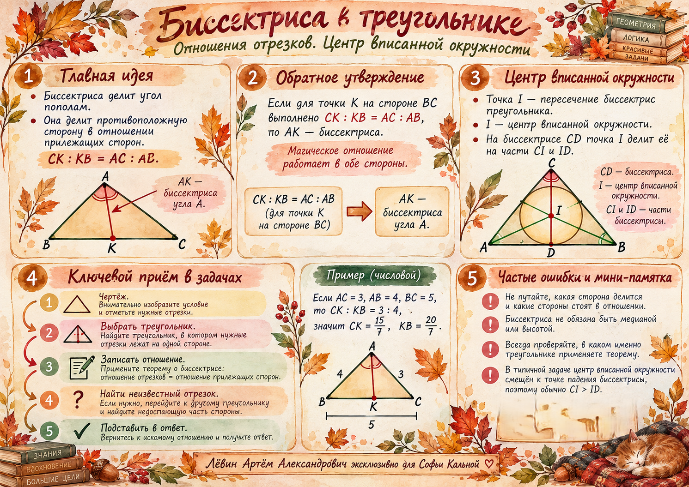

МАТЕМАТИКА / ОГЭ / ГЕОМЕТРИЯ / 21 ОКТЯБРЯ 2026
Биссектриса и отношения отрезков
Одна теорема позволяет находить части стороны, а две последовательные пропорции — отношение, в котором центр вписанной окружности делит биссектрису.

Как биссектриса делит сторону
Отношение полученных отрезков равно отношению двух прилежащих сторон.
Для точки K внутри BC, если AK — биссектриса угла A, справедливо:
Обратное утверждение: если выполняется эта пропорция, отрезок AK является биссектрисой.
Пример из занятия: AC = 3, AB = 4, BC = 5. Тогда CK = 15/7, KB = 20/7. Их сумма равна 5.
Второй пример: CK = 2, KB = 3, AC = 4. Из 2/3 = 4/AB получаем AB = 6.
- Правильно сопоставляю CK с AC, а KB с AB.
- Проверяю, что части стороны в сумме дают её длину.
- Помню: биссектриса в общем случае не является медианой или высотой.
Центр вписанной окружности и биссектриса
Искомые CI и ID лежат на одной стороне треугольника ACD.
Пусть CD — биссектриса угла C, D лежит на AB, а I — центр вписанной окружности. Точка I лежит на пересечении внутренних биссектрис.
Затем рассмотрим ACD. Поскольку AI — биссектриса угла CAD, по той же теореме CI/ID = AC/AD.
Для AC = 7, BC = 8, AB = 9 получаем CI/ID = 15/9 = 5/3. Проверка через AD: AD = 21/5, CI/ID = 7/(21/5) = 5/3.
Важный вывод. AC + BC > AB по неравенству треугольника, следовательно, CI > ID всегда.
Как найти сторону через периметр
Отношение CI:ID позволяет выразить сумму боковых сторон через основание.
Пусть CI:ID = m:n, где m > n > 0. Тогда (AC + BC)/AB = m/n. Поэтому периметр:
Следовательно, AB = n·P/(m + n). Например, при CI:ID = 5:3 и P = 48 получаем AB = 18; сумма AC + BC = 30.
Маршрут решения
Главный приём — последовательно менять рассматриваемый треугольник.
- Разметить чертёж. Обозначить CD, I, D и стороны AB, AC, BC.
- Взять треугольник ABC. Записать AD/DB = AC/BC и найти AD.
- Перейти к треугольнику ACD. Здесь AI — биссектриса, а CI и ID — части CD.
- Подставить. CI/ID = AC/AD = (AC+BC)/AB.
- Проверить. По неравенству треугольника CI/ID > 1.
Самостоятельная тренировка · Путь А
Десять заданий, от прямого применения пропорции до задачи на доказательство.
В № 1–3 точка K находится на BC, AK — биссектриса угла A. В № 4–10 CD — биссектриса угла C, D лежит на AB, I — центр вписанной окружности.
- AC = 6, AB = 9. Найдите CK:KB.
- AC = 6, AB = 10, BC = 8. Найдите CK и KB.
- CK = 3, KB = 5, AC = 9. Найдите AB.
- AC = 7, BC = 8, AB = 9. Найдите CI:ID.
- AC = 10, BC = 13, AB = 15. Найдите CI/ID и объясните, почему оно больше единицы.
- CI:ID = 7:4, AB = 12. Найдите AC + BC и P.
- CI:ID = 5:3, P = 64. Найдите AB.
- AB = 18, AC = 15, BC = 12. Найдите AD, DB, CI:ID.
- Докажите CI > ID в любом невырожденном треугольнике. Возможно ли CI = ID?
- AB = 24, AD = 9, AC = 12. Найдите BC и CI:ID.
Показать ответы после самостоятельного решения
01 · 2:3
02 · CK = 3, KB = 5
03 · AB = 15
04 · 5:3
05 · 23/15
06 · AC + BC = 21, P = 33
07 · AB = 24
08 · AD = 10, DB = 8, CI:ID = 3:2
09 · CI > ID; равенство невозможно
10 · BC = 20, CI:ID = 4:3
Осенняя памятка
Ключевые идеи урока на одной акварельной карте.
